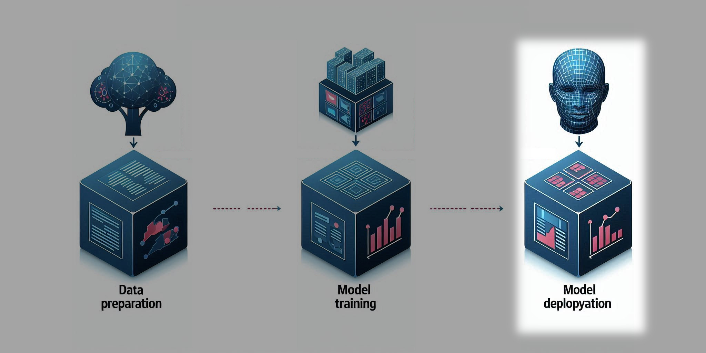

Foundations of AI
Olof Mogren, AI at RISE, 2024-09-20
AI 101
So, not really for you guys
But I'll give it a try anyway
As research director
at the Department of Computer Science
- I get contacted by people with vastly differing backgrounds
AI is tech that performs intelligently
Result: some impressive tools

These are all ready trained models.
No further improvement takes place when you use them.
10 misconceptions about ML
European Data Protection Supervisor
- Correlation implies causality.
- The greater the variety of data, the better
- ML needs completely error-free training datasets.
- The development of ML systems requires large repositories of data or the sharing of datasets from different sources.
- ML models automatically improve over time.
- Automatic decisions taken by ML algorithms cannot be explained.
- Transparency in ML violates intellectual property and is not understood by the user.
- ML systems are less subject to human biases.
- ML can accurately predict the future.
- Individuals are able to anticipate the possible outcomes that ML systems can make of their data.